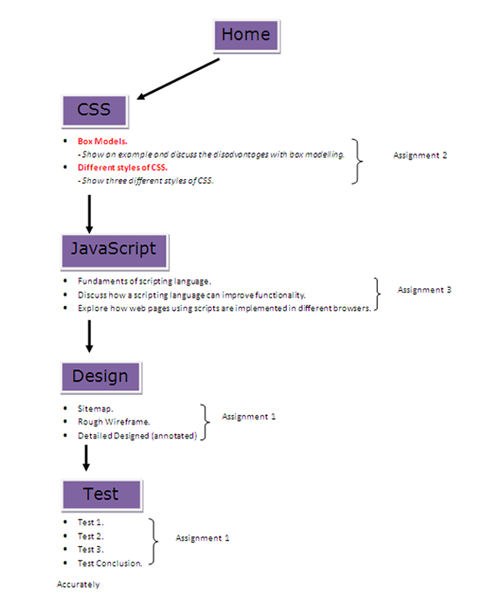
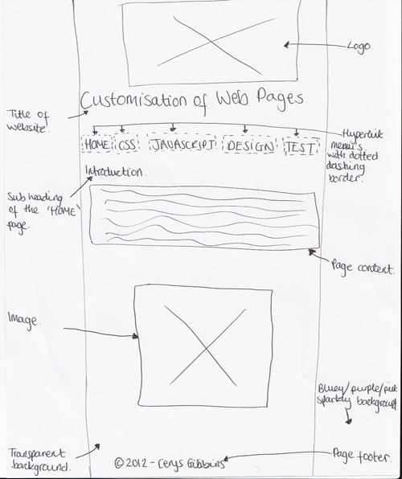
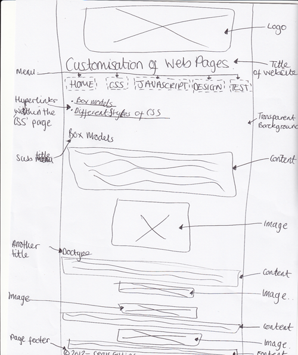
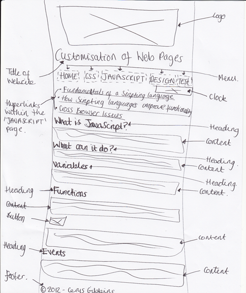

Customisation of Web Pages
Design
Below I am going show you the different steps I needed to take before coding and creating my website. Firstly, I needed to create a sitemap which is an overview of what will be featured in my website. It will show the main menu and what will be included in each page of the website. The sitemap will help users to navigate themselves around the website and give them an idea what the website is about.
Sitemap
Below is an image of my sitemap that I created in a Word document. It shows the main menus which have a border around them and then below the menus are bullet points which shows what will be involved in each page.
Rough Wireframes
Below are three different rough wireframs that I did for gathering all my ideas for how I want my website to look. The first rough wireframe that I created was the Home page which is shown below.
The second rough wireframe that I created was the CSS page and within this page there are another two seperate hyperlinks. I decided to add in another two hyperlinks within the CSS page because I thought it would look more professional and so users wouldn't get confused and wouldn't have to read so much on one page.
The last rough wireframe that I created was the JavaScript page. Within this page there are also other hyperlinks for different topics. I have also included a clock within the JavaScript pages because it shows that I have used some JavaScript code.
I only decided to create three rough wireframes because all of my pages for my website have the same design and similar layout.
Detailed Wireframe
Below is a detailed design of the Home page for my website.